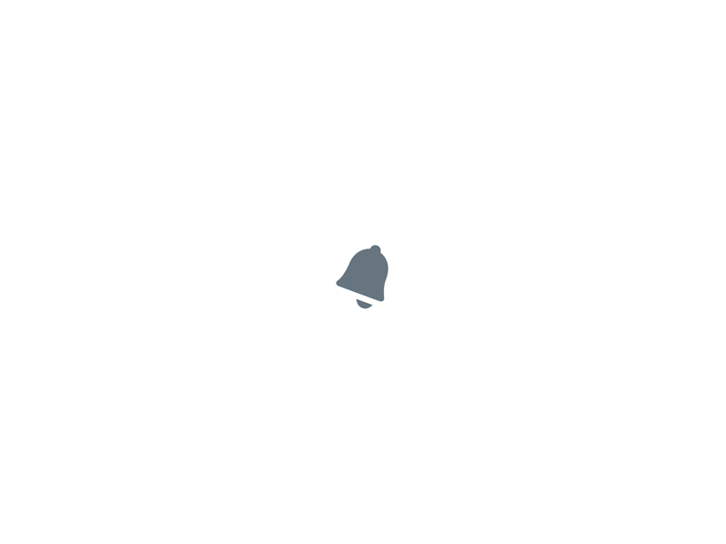

Derek Mark Torsani


Yes, I was one of those designers posting a design prompt from Daily UI everyday for the last 100 weekdays.
In October of 2015 I stumbled upon dailyui.co, a daily email letter that includes a simple design prompt and nothing else. I thought, “Oh, this could be fun.” Although, as a motion designer, I decided that I would up the challenge to animate each prompt into a looping GIF.
This was a good idea, but also a very challenging one. Instead of spending maybe 30 minutes a day designing the prompt, I typically spent about 1–4 hours. However, this helped me learn better time management, workflow efficiency, and grow to become a better motion designer.
https://dribbble.com/dmtors/projects/319430-Daily-UI001—Sign Up

076—Loading (Android Marshmallow Boot Animation)
049—Notifications
042—ToDo List

068—Flight Search
026—Subscribe
Read more about my journey with Daily UIderektorsani (at) gmail (dot) com
@dmtors